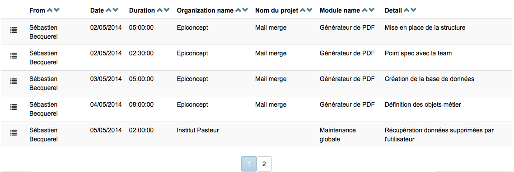

WidgetTable¶
Fonction¶
Hérite de WidgetBase
Ce composant sert à rendre un tableau HTML (“<table/>”) dont le rendu se base sur les class CSS dédiées de Bootstrap.
Attributs¶
dataset (Obligatoire)¶
Type : String
Fonction : Indique le nom du dataset dont les données seront affichées dans le tableau.
<table dataset="foo" />
Colonnes¶
La section “columns” sert à définir les colonnes du tableau, et en particulier à indiquer les variables du dataset à afficher.
<columns>
<column field="owner" title="From" />
<column field="intervention_date" />
<column field="duration" />
<column field="organization_name" title="Organization name"/>
<column field="project_name" title="Project name" />
<column field="module_name" title="Module name" />
<column field="detail" />
</columns>
L’attribut title est optionnel, s’il est absent le système afficher le default_short_label de la variable (s’il n’est pas défini, c’est l’identifiant de la variable qui est pris).
Options¶
edit_url¶
Type: string
Fonction: détermine l’adresse où rediriger pour éditer une ligne du tableau. Il est possible de définir des paramètres via la syntaxe {varname} où “varname” correspond à une variable du dataset.
<options>
<option output="html" option_name="edit_url" value="form/frame/get/id/42/id_data/{id_data}"/>
</options>
enable_deletion¶
Fonction: rend possible la suppression d’une ligne du tableau. Pour cela il faut obligatoirement que le dataset utilisé contienne une clé primaire.
<options>
<option output="html" option_name="enable_deletion" value="true"/>
</options>
Pagination¶
La pagination n’est pas intégrée au widget table, elle est gérée par un widget dédié appelé WidgetPaginator.
Il prend un paramètre, qui est le dataset à paginer.
<paginator dataset="interventions"/>
Exemple complet¶
<table dataset="interventions">
<options>
<option output="html" option_name="edit_url" value="form/frame/get/id/42/id_data/{id_data}"/>
<option output="html" option_name="enable_deletion" value="true"/>
</options>
<columns>
<column field="owner" title="From" />
<column field="intervention_date" />
<column field="duration" />
<column field="organization_name" title="Organization name"/>
<column field="project_name" title="Project name" />
<column field="module_name" title="Module name" />
<column field="detail" />
</columns>
</table>
<paginator dataset="interventions"/>
Surcharge¶
Il est possible de créer son propre composant Table qui dérive de WidgetTable pour personnaliser certains comportements:
- Ajouter de nouvelles actions dans le menu: surcharger la méthode _initializeMenu pour déclarer de nouvelles actions en plus des actions natives. Pour chaque action il faut déclarer une fonction qui a la charge de créer l’élément HTML dans le menu, et d’attacher l’événement sur l’action. Voir les méthodes _createEditAction et _createDeleteAction.
- Modifier le rendu de certaines cellules: surcharger la méthode __getTDContent qui prend en paramètre le champ pour lequel il faut afficher la valeur (sous la forme d’un objet de type Y.Field), et renvoi la chaine de caractère à afficher.